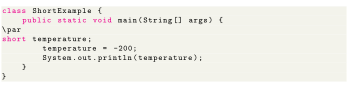

Next: int Up: 8 Primitive Data Types Previous: byte Contents
The data type can have values from (16-bit signed two's complement integer). It's used instead of other integer data types to save memory if it's certain that the value of the variable will be within . Default value is 0.
